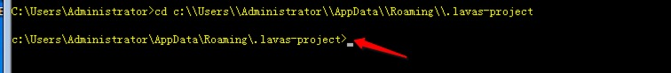
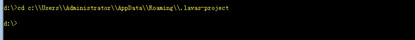
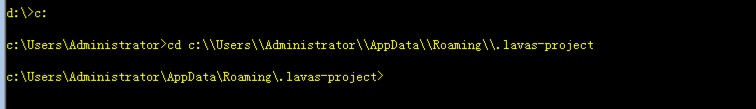

2018 年刚开始就踩了一个很懵逼的雷，居然还是关于 Windows 的命令行的。
背景
背景是这样的，在开发 Lavas cli 的过程中，需要通过开发者选定的模版类型拼接出对应的 repo 地址和分支名，然后通过 Node.js 从 github 上拉取合适的模版到本地给开发者使用。这个需求很明确，就是涉及到需要使用 Node.js 操作 git 命令行，然后就很自然的就使用 child_process.exec 搞起来了。
想要实现这个需求，大概先组织一下命令行，大概需要干下面几件事情：
1 | # 如果是没有 /some/target/path 的话 |
然后问题就来了，child_process.exec 如何执行多个命令行呢？child_precess.exec 命令只能支持传入一条命令。所以需要将多条命令合成一条命令才行。
同时执行多行命令
无论是 Linux/Mac 还是 Windows 的 shell 命令都支持一条命令来执行多条命令的。一共有 &&，&，||，| 这么几种方式，这几种方式分别代表着不同的含义：
- &&：
command1 && command2，如果 command1 执行成功了，就执行命令 command2，如果 command1 失败了，就不会执行 command2 了。 - &：
command1 & command2，无论 command1 执行成功与否都会执行 command2。 - ||：
command1 || command2，如果 command1 执行成功了，就不会执行 command2 了，如果 command1 失败了，就会继续执行 command2。 - |：
command1 | command2，command1 的结果做为 command2 的参数，如果 command1 失败了，整个命令也就都失败了。
Linux/Mac 下还可以使用 ; 来链接两条命令，顺序执行命令，不管成功与否都往后执行，和 & 含义一样。
了解了这些逻辑之后，我们的需求肯定就是选择 && 来实现我们前面所说的需求：
1 | # 假如已经 clone 了模版到 /some/target/path 目录的话 |
基于我们上面的种种分析，我们的代码基本上就是以下这个样子了：
1 | // 借助一些开源包 |
然后在 Linux/Mac 和 windows 上测试了一遍，发现没什么问题，就觉得 OK 了，但是直到今天被 Windows 用户曝出从 github 上拉取代码一直报 fatal: Not a git repository (or any of the parent directories): .git 的错误。
排查错误
看这个报错，应该就是执行 git 命令的时候，没有找对相应的目录，所以排查的重点就是这几条命令了，如果是没有找到相应的 git 目录的话，这个 cd 命令就很容易被怀疑了。
这里需要交代个背景，我们的 targetPath 是通过 process.env['APPDATA'] 和 process.env['HOME'] 的方式取得的：
1 | let targetPath = process.env[ |
也就是说，对于 targetPath 有两件事我们是能够明确的：
- 在 Linux/Mac 下，targetPath 的路径为
/User/zoumiaojiang/.lavas-project - Windows 下就是
c:\\Users\\Administrator\\AppData\\Roaming\\.lavas-project
只有在 Windows 下才会报错，那么执行命令 cd c:\\Users\\Administrator\\AppData\\Roaming\\.lavas-project 到底能有什么问题呢？为什么我自己在 Windows 上测试就没有问题呢？然后我在自己电脑上也敲了如下图的命令，完全没问题啊：

瞬间陷入懵逼状态中，感觉陷入僵局。。
windows cd 命令
就在懵逼的过程中，瞎敲命令行，居然发现了这种情况：

而这种情况是失败的，居然没有 cd 成功，然而这个和成功的 case 的差别，仅仅只是因为这次我是在 d:\ 盘执行的。回想起 Lavas cli 的报错，果然不是在 c:\ 盘执行的命令行，而我之前一直测试成功，因为我每次都是在 c:\ 盘执行命令。这下彻底懂了：
- Windows 不支持直接跨盘执行 cd 命令
- 在执行 cd 命令之前，必须先指定盘

这下果然成功了。问题终于找到了，突然回想，这个错误犯的也太低级了，之前操作 Windows 命令行的时候，这个操作简直是潜意识的，久疏 Windows 之后，居然把这么个事给忘记了。既然找到了病因，就好解决了，我们改一下 downloadFromGit 的代码就可以了：
1 | // ... |
之前的 Bug 是因为 Windows 下不能跨盘直接 cd，导致没有直接 cd 到 targetPath，所以不能正确的进入 git 目录，导致会报 fatal: Not a git repository (or any of the parent directories): .git 错误。
PS: 往往解决 Bug 都是容易解决的，定位 Bug 却很难，记下这个有意思的 Bug，提醒下自己以后一定要仔细，测试一定要充分。
欢迎大家扫码关注我的微信公众号「江哥乱谈」，关注我更多的文章动态。

本文为原创文章，会经常更新知识点以及修正一些错误，因此转载请保留原出处，方便溯源，避免陈旧错误知识的误导，同时有更好的阅读体验。
转载请注明来源：https://zoumiaojiang.com/article/a-bug-caused-by-windows-command-line/